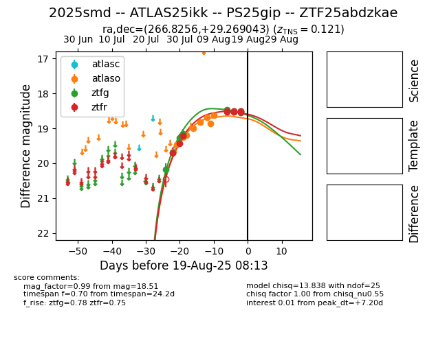

Target 2025smd at 2025-08-12 11:26, see:
FINK: fink-portal.org/2025smd
Lasair: lasair-ztf.lsst.ac.uk/objects/2025smd
ALeRCE: alerce.online/object/2025smd
TNS: wis-tns.org/object/2025smd
YSE: ziggy.ucolick.org/yse/transient_detail/2025smd
alt names
ZTF25abdzkae (ztf,fink)
2025smd (tns,yse)
ATLAS25ikk (atlas)
coordinates:
equatorial (ra, dec) = (266.8256,+29.26904)
galactic (l, b) = (54.1358,+25.93632)
photometry
last atlaso=18.62, ztfg=19.15, ztfr=19.22
9 atlaso, 4 ztfg, 3 ztfr detections
